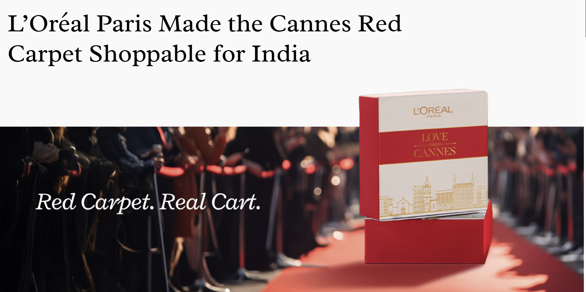

Making the Cannes red carpet shoppable in real time.
L'Oréal Paris wanted Indian consumers to buy the beauty looks happening on the Cannes red carpet — live, as they watched. We built a social commerce system that collapsed the gap between aspiration and purchase.

Cannes is L'Oréal's biggest annual cultural moment. It was not converting.
L'Oréal Paris has been the official beauty partner of the Cannes Film Festival for decades. In India, the festival generates enormous organic reach — celebrity looks trend on Instagram within minutes of a red carpet appearance, editorial content dominates beauty media for weeks, and the L'Oréal ambassadors who attend (including several prominent Indian celebrities) create significant second-screen engagement.
The problem: almost none of that attention was converting to sales. The interest was real, the intent was there, but the path from "I want that look" to "I bought the product" had too many steps, too much friction, and arrived too late — by the time a consumer clicked through from editorial coverage to a product page, the cultural moment had passed.
As Content and Strategy Lead at Tonic Worldwide, I led the campaign architecture for the 2025 Cannes brief — the mandate being to close that gap between aspiration and purchase in real time.
Beauty aspiration has a half-life of hours, not weeks.
The core tension in beauty marketing around live events is temporal. A consumer who sees a look on the red carpet at 11pm on a Tuesday is maximally engaged at 11pm on that Tuesday. By Wednesday morning, the algorithmic window has shifted. By the following week, the look is archived.
Traditional campaign models were built for the wrong timeline — content produced after the event, distributed through editorial partnerships, and linked to product pages that were not optimised for the spike. The result: L'Oréal captured massive awareness during Cannes and a fraction of the conversion that awareness should have produced.
The specific product-level insight: Hyaluron Pure, one of the hero SKUs featured in ambassador looks, had strong brand awareness in India but relatively modest sell-through. Consumers knew the product. They were not buying it. The Cannes moment was the opportunity to change that — if we could get the right message to the right person at the moment she was watching.
"The red carpet is not a broadcast moment. It is a commerce moment — if you architect it correctly."
The strategic frame that shaped the campaign
A real-time content system that turned every carpet look into a shoppable asset.
We designed the campaign as a live social commerce system built on four interconnected layers:
Real-time product mapping. We pre-built a product-look catalogue linking every L'Oréal Paris product that any ambassador might wear on the carpet, with Nykaa product page URLs, pricing, and copy ready to deploy. When a look was confirmed on the carpet, the relevant product card went live within 45 minutes across Instagram Stories, Reels, and the Nykaa storefront.
Gamified engagement modules. Rather than passive consumption, we built interactive elements — a "Get the Look" game where users matched carpet looks to products, with winners receiving Nykaa vouchers. This created dwell time, data on product preference, and a viral mechanic that extended organic reach without additional media spend.
Ambassador look conversion. Every appearance by a L'Oréal Paris ambassador was treated as a shoppable moment: full-look breakdowns published to Instagram within the hour, linked directly to Nykaa product pages with a campaign-specific UTM structure for clean attribution.
Influencer amplification at speed. We pre-briefed a tier-two influencer cohort on the look-to-product framework so they could publish their own "dupes" and reactions within hours of each carpet appearance, using already-prepared product links and talking points.
An operations problem as much as a creative one.
Cannes runs over ten days. We operated a near-continuous content production and distribution cycle across the full festival period. My role spanned the strategy architecture, the content framework, the influencer briefing system, and the real-time editorial decisions about which looks to prioritise and how to sequence them across channels.
The Nykaa partnership required close coordination with their merchandising and storefront team — product pages had to be updated in near-real-time to reflect the campaign, with accurate stock levels and campaign-specific copy. We built a shared operational channel that let the Tonic team push updates to Nykaa within the 45-minute window.
The gamified module ran on Nykaa's platform and was promoted through L'Oréal's owned social channels. Managing the prize fulfilment, the technical deployment, and the content around the game simultaneously — while also running the live editorial operation — required the kind of project management that does not show up in the creative awards entry but determines whether anything ships at all.
Commerce metrics that a brand awareness campaign almost never produces.
The campaign generated 42.45M total reach, 46.24M impressions, and a 4.12% engagement rate — comfortably above benchmark for beauty campaigns at this scale. The Hyaluron Pure SKU sold at a rate of more than one unit per minute during the peak Cannes window, a sell-through rate the brand had not previously achieved outside of major promotional events.
More significantly: 1.2M visits to the Nykaa L'Oréal Paris storefront represented a measurable shift from earned-media awareness to earned-media conversion — which is the hardest metric to move in beauty marketing at scale. The gamified module's 13,000 completions provided L'Oréal with a first-party data asset (product preference signals at the SKU level) with clear downstream value for retargeting and personalisation.
Social commerce is an operations challenge that lives inside a creative brief.
The campaign worked because we treated it as an operations problem from the beginning — not an afterthought. The real-time content system, the pre-built product catalogue, the influencer briefing protocol, the Nykaa editorial coordination: none of these are glamorous, and none of them appear in the final creative. But remove any one of them and the 45-minute response window becomes four hours, and the commerce result collapses.
The broader lesson for product and brand teams: shoppable content strategies fail at the operations layer, not the concept layer. The concept — "make the red carpet shoppable" — is obvious. Executing it in real time, at festival pace, across multiple platforms and a retail partner, with accurate attribution, is the actual problem. That is where the strategy has to live.